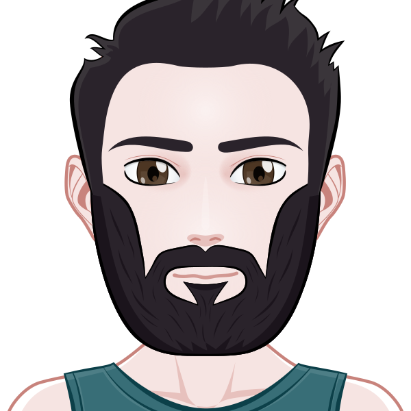

Curiculum Vitae
Juriens Rodrigue
,
Developpeur consepteur d'application
Formation
Titre pro “Développeur Web et Web Mobile”
Ecole O’clock, Paris
fév. 2018 -juil. 2018
Formation de 700h intensives
Télé-présentiel
1 mois de spécialisation Symfony
1 mois de projet en équipe
Diplôme de niveau 3 inscrit au RNCP
Certification OPQUAST (Mention : “Avancé”)
OPQUAST, Paris
Août 2018 - août 2023
Examen de certification “Maitrise de la qualité en projet web”
Parcours développeur web junior
Open Classrooms, Paris
Août 2016 - Dec 2017
Certifications du parcours “Développeur web junior” validées en cours du soir
BTS (Brevet fédéral) mécanique automobile
IMAA, Cruseilles
Sept 2009 - juil. 2011
BAC Pro (Maturité pro) mécanique automobile
CECOF, Ambérieu en Bugey
Sept 2007 - juil. 2009
BEP (AFP) mécanique automobile
CECOF, Ambérieu en Bugey
Sept 2005 - juil. 2007
Experiences
Stage Développeur Back-end Symfony
Gaea21, Genève
oct. 2018 - aout 2019
Développement Back-end sous Symfony 3.4
Mise en place d’un système d’authentification commun pour plusieurs plateformes
Consultant Symfony, PHP et BDD
Créations BDD relationnelles
Rédaction de documentation
Application de gestion de planning
O’clock, Paris
Août 2018 - sept 2018
Création d’un gestionnaire de plannings (en tant que support d’éxamin)
Full stack Symfony 4
Création de BDD relationnelle
Gestion dynamique du site (AJAX, JQuery)
Mise en place de CSS grid
Contrôle de sécurité (faille XSS, injection SQL)
Click’n’Send
O’clock, Paris
Juin 2018 - juil. 2018
Développement d’une application de gestion de facturation (dans le cadre de la formation)
Gestion du back-end sous Symfony 4
Mise en relation entre Symfony et React
Création de BDD relationnelle
Création de services (génération de PDF, calculs multiples...)
Autres
Mail
juriens.rodrigue@gmail.com
Telephone
+33630055550
Linkedin
Mon profil
Interets
Jeux videos
Randonée
Annimaux
Lecture
Cinema